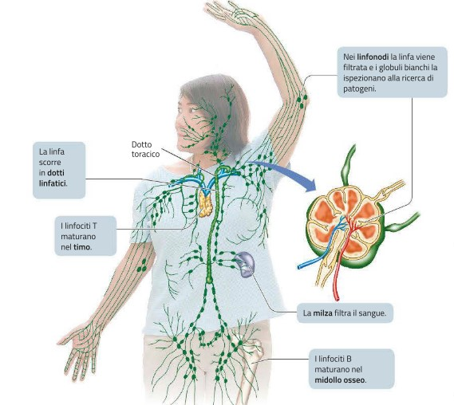
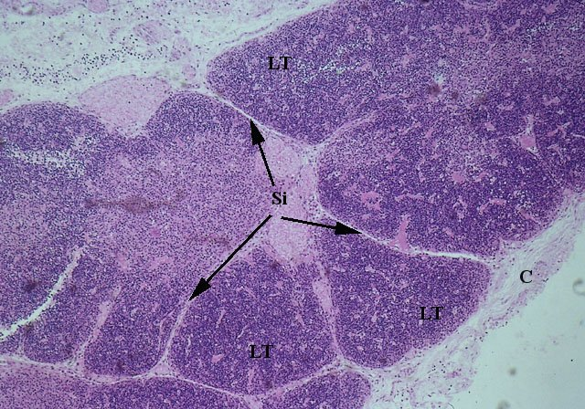
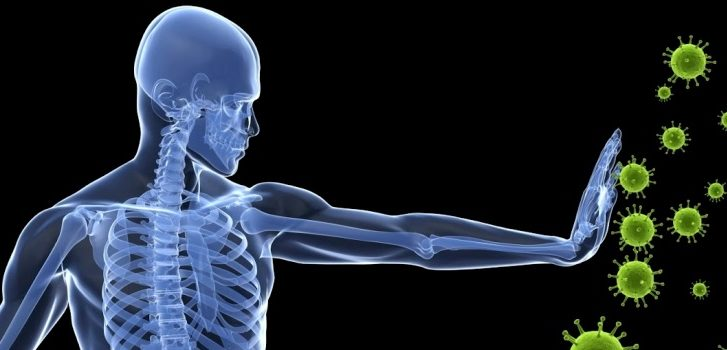

L'immunità è la capacità di utilizzare le proprie difese per contrastare gli agenti partogeni, cioè gli organismi estranei che, penetrando nel nostro corpo, potrebbero provocare malattie.
Esistono due tipi principali di meccanismi di difesa: l'immunità innata e l'immunità adattativa. L'immunità innata o aspecifica comprende diversi meccanismi generici di protezione che agiscono allo stesso modo su tutti gli agenti patogeni, impedendo loro di penetrare e diffondersi nell'organismo. Queste difese operano tipicamente con notevole rapidità e includono barriere meccaniche come la cute e fagociti che ingeriscono i microrganismi invasori. L'immunità adattativa o specifica agisce, invece, contro un bersaglio ben definito (un agente patogeno o una sostanza tossica) con un'azione lenta ma precisa che comprende tre passaggi:L'intero processo è possibile perché le cellule immunitarie possiedono una proprietà unica: la capacità di distinguere tra SELF(le molecole dell'organismo stesso) e NON SELF(le molecole estranee all'organismo).
- il riconoscimento della sostanza o dell'agente estraneo da parte dei linfociti B e T (particolari tipi di globuli bianchi);
- una risposta mirata che può avvenire sia attraverso la produzione di specifiche molecole sia attraverso l'azione diretta di cellule che attaccano un particolare invasore;
- la creazione di unamemoria, che immunizza l'organismo per un tempo più o meno lungo in modo che resista a ulteriori attacchi del medesimo agente esterno; la memoriaimmunologica è molto importante e ci protegge dal ripetersi di molte malattie, come per esempio la varicella.
IL SISTEMA LINFATICO E LE SUE FUNZIONI
Il sistema linfatico è un sistema di vasi separati dalla circolazione sanguigna entro cui scorre un liquido chiamato linfa, che ha composizione simile al fluido interstiziale. La linfa scorre nei vasi linfatici in una sola direzione: piccoli capillari linfatici si uniscono in vasi progressivamente maggiori e infine in due vasi linfatici (chiamati dotti toracici) che si svuotano nelle larghe vene poste alla base del collo. Il dotto toracico sinistro trasporta la maggior parte della linfa proveniente dalla parte inferiore del corpo ed è molto più grande del dotto toracico destro. La linfa, come il sangue, è sospinta verso il cuore dalle contrazioni dei muscoli scheletrici e dai movimenti respiratori; inoltre i vasi linfatici, come le vene, possiedono valvole che dirigono il flusso linfatico «a senso unico» verso il dotto toracico. Il sistema linfatico svolge due funzioni:
- Preleva dai tessuti e trasporta nel sangue (attraverso la linfa) i lipidi assorbiti dall'apparato digerente e il liquido interstiziale in eccesso, che altrimenti ristagnerebbe nei tessuti;
- É implicato nella difesa dell'organismo grazie ai linfonodi, piccole masse di tessuto spugnoso che contengono un gran numero di globuli bianchi (macrofagi e linfociti) e sono collocate lungo il percorso dei vasi linfatici più grandi.
I linfonodi sono indispensabili per l'immunità specifica e aspecifica per diverse ragioni:
- All'interno dei linfonodi proliferano e diventano attivi i linfociti B provenienti dal midollo osseo.
- Agiscono come filtri e rimuovono dalla linfa i microrganismi e altri materiali estranei che vengono intrappolati dai fagociti.
- Nei linfonodi vengono distrutte le cellule morte o danneggiate, e spesso anche le cellule tumorali.
GLI ORGANI LINFATICI SI DIVIDONO IN PRIMARI E SECONDARI!

- Gli organi linfatici primari, cioè il midollo osseo e il timo, sono necessari per la produzione dei linfociti. Nel midollo osseo sono presenti le cellule staminali da cui derivano i leucociti e tutte le cellule del sangue. I linfociti B maturano nel midollo osseo (B sta per bone marrow), mentre i linfociti T completano il loro sviluppo nel timo (T sta per thymus), una ghiandola collocata davanti alla trachea, attiva soprattutto in età giovanile. Quando hanno completato lo sviluppo, i linfociti B e T si trasferiscono nei linfonodi o negli altri organi linfatic
- Gli organi linfatici secondari comprendono la milza, le placche di Peyer e le tonsille, formazioni localizzate in diverse parti del corpo costituite principalmente da tessuto connettivo e ricche di linfociti. Gli organi linfatici secondari hanno una funzione di difesa simile a quella dei linfonodi, anche se non filtrano la linfa perché non sono collocati sul percorso dei vasi linfatici; ognuno di essi presenta caratteristiche specifiche, osserviamo alcuni esempi:
- La milza è un organo grande fortemente vascolarizzato, che filtra il sangue eliminando microrganismi e sostanze di scarto. Inoltre, elimina dal sangue gli eritrociti invecchiati, recuperando le sostanze utili che vengono inviate al fegato, funge da deposito di piastrine e sangue, e produce linfociti. A volte è necessario asportare la milza chirurgicamente (splenectomia) per evitare emorragie in caso di incidenti o traumi.
- Le tonsille, disposte ad anello nella faringe, contrastano ed eliminano batteri e altri microrganismi che entrano attraverso la bocca e il naso.
- Le placche di Peyer, nell'intestino tenue, svolgono un ruolo simile alle tonsille e distruggono gli agenti patogeni che possono penetrare nel nostro corpo attraverso l'apparato digerente.
L'IMMUNITÁ INNATA
Meccanismo di difesa Funzione Barriere di superficie Cute Impedisce l’ingresso di patogeni e di sostanze estranee. Secrezioni acide Inibiscono la crescita batterica sulla cute. Muco Impedisce l'ingresso di patogeni; produce difensine che uccidono i patogeni. Secrezioni mucose Intrappolano i batteri e altri patogeni nelle vie respiratorie e nel canale digerente. Peli delle narici Filtrano i batteri nelle vie nasali. Ciglia Spingono verso l'esterno il muco e i materiali intrappolati. Succhi gastrici L'acido cloridrico concentrato e le proteasi uccidono i patogeni nello stomaco. Ambiente acido della vagina Limita la crescita di funghi e batteri nelle vie genitali femminili. Lacrime, saliva Lubrificano e lavano; contengono lisozima, che uccide i batteri. Difese aspecifiche cellulari, chimiche e coordinate Flora normale Compete con i patogeni; può produrre sostanze tossiche per i patogeni. Febbre Risposta generalizzata dell'organismo che inibisce la proliferazione dei patogeni e accelera i processi di riparazione. Tosse, starnuti Espellono i patogeni dalle vie respiratorie superiori. Risposta infiammatoria Limita la diffusione dei patogeni ai tessuti circostanti; concentra le difese; digerisce patogeni e cellule morte; rilascia mediatori chimici che attraggono fagociti e linfociti. Fagociti (macrofagi e granulociti neutrofili) Inglobano e distruggono i patogeni che penetrano nell'organismo. Linfociti natural killer (NK) Attaccano e lisano cellule infettate da virus o cancerose. Proteine antimicrobiche: Interferoni Vengono rilasciati da cellule infettate da virus per proteggere il tessuto sano dall'infezione virale; mobilizzano le difese specifiche. Proteine del complemento Lisano i microrganismi, aumentano la fagocitosi e contribuiscono alla risposta infiammatoria e a quella anticorpale.
L'immunità innata o aspecifica comprende diversi sistemi generici di protezione, che possediamo fin dalla nascita e costituiscono la prima linea di difesa dell'organismo. Negli esseri umani, essi comprendono barriere fisiche, difese cellulari e chimiche. Prima di tutto, possiamo distinguere le difese esterne da quelle interne, osservate:
--La prima e più semplice strategia di difesa consiste nel cercare di impedire agli agenti patogeni di penetrare nel corpo. Tutte le membrane di rivestimento a contatto con l'esterno fungono quindi da barriera meccanica e producono sostanze chimiche di protezione che agiscono localmente. La cute è il primo sistema di difesa aspecifica contro le aggressioni da agenti patogeni. Funghi, batteri e virus riescono solo raramente a penetrare la cute non danneggiata e in buono stato di salute; tuttavia, eventuali ferite possono aumentare notevolmente il rischio di infezioni. I batteri e i funghi che normalmente vivono e si riproducono in larga misura sulle superfici del nostro corpo senza provocare malattie vengono complessivamente indicati come flora normale. Questi ospiti naturali sono in competizione con gli agenti patogeni per lo spazio disponibile e le sostanze nutritive, e pertanto rappresentano una forma aspecifica di difesa. Le mucose dei vari apparati e sistemi del nostro organismo, quali occhi, vie respiratorie, canale digerente, vie escretorie e riproduttive, possiedono altre difese sia di natura fisica sia di natura chimica: per esempio il liquido lacrimale, il muco nasale e la saliva contengono un enzima, chiamato lisozima, che attacca le pareti cellulari di molti batteri.
--Il muco nasale intrappola i microrganismi presenti nell'aria; la maggior parte di quelli che riescono a oltrepassare questa prima barriera vengono bloccati nel muco delle vie respiratorie più profonde. Il muco e i patogeni in esso inglobati vengono poi spinti verso il naso e la bocca dalle ciglia vibratili dell'epitelio che riveste le vie respiratorie. Lo starnuto è un altro modo per rimuovere i microrganismi dalle vie respiratorie.
--Infine, i rivestimenti mucosi producono difensine, molecole peptidiche tossiche per un'ampia varietà di patogeni come batteri, eucarioti microbici e virus. Le difensine penetrano nella membrana plasmatica e sopprimono gli invasori, attraverso meccanismi non del tutto noti, ma che coinvolgono certamente la formazione di «aperture» nelle membrane, rendendole permeabili e provocando la fuoriuscita del materiale interno. Le difensine vengono, inoltre, prodotte dai fagociti, che se ne servono per uccidere i patogeni che hanno inglobato. Gli agenti patogeni che raggiungono il canale digerente incontrano altri dispositivi di difesa: il succo gastrico dello stomaco rappresenta un ambiente letale per molti batteri, a causa del suo elevato contenuto di acido cloridrico e di proteasi. Il rivestimento delle pareti dell'intestino tenue normalmente non può essere attraversato, se integro, dai batteri, ma questi vengono attaccati dai sali biliari secreti all'interno del lume intestinale. L’intestino crasso ospita numerosi batteri che si moltiplicano liberamente e che sono rimossi con le feci. La maggior parte dei batteri intestinali forma la flora normale che fornisce un beneficio all'ospite.
LE DIFESE ESTERNE
I patogeni che riescono a penetrare attraverso le superfici esterna e interna del corpo umano incontrano sistemi di difesa aspecifica più complessi, che comprendono la secrezione di varie proteine difensive e cellule dotate di attività fagocitaria.
- Le proteine del complemento sono circa 30 diverse proteine antimicrobiche presenti nel sangue, che costituiscono complessivamente il sistema del complemento. In combinazioni diverse, queste proteine agiscono in una caratteristica cascata di eventi, in cui ogni proteina attiva quella successiva: dapprima le proteine aderiscono ai microbi, permettendo ai fagociti di riconoscerli e di distruggerli; poi esse attivano la risposta infiammatoria e attraggono i fagociti verso la sede di infezione; infine provocano la lisi delle cellule estranee.
- Gli interferoni costituiscono una classe di glicoproteine (una proteina alla cui catena peptidica è legata una catena oligosaccaridica) che rappresenta una delle prime linee di difesa aspecifica contro le infezioni virali. Quando le cellule sono infettate da un virus, esse producono piccole quantità di interferoni che agiscono stimolando sia le cellule infette sia quelle non infette ad aumentare le difese antimicrobiche. Inoltre, gli interferoni incrementano l'attività lisosomiale che provvede alla degradazione delle proteine virali in peptidi più piccoli: questi ultimi, esposti sullamembrana plasmatica, stimolano l'immunità specifica.
- I fagociti costituiscono una classe di globuli bianchi che comprende i granulociti ei monociti. Queste cellule circolano liberamente nel sangue e nel sistema linfatico; quando si sviluppa un'infezione, i granulociti fuoriescono dai vasi sanguigni e penetrano nei tessuti infiammati: qui ingeriscono i patogeni, li sopprimono liberando difensine e producendo molecole che potenziano la risposta infiammatoria, mentre i monociti si differenziano in grosse cellule fagocitarie dette macrofagi.
- I linfociti natural killer (NK) sono in grado di riconoscere le cellule tumorali o quelle infettate da un virus, e di provocarne la lisi, rilasciando proteine che distruggono la membrana plasmatica (perforine).
L'INFIAMMAZIONE
In caso di infezioni che danneggiano i tessuti, l'organismo ricorre alla risposta infiammatoria. Gli eventi infiammatori contrastano i microrganismi, le tossine o le sostanze estranee presenti, ne prevengono la diffusione in altri tessuti e predispongono la riparazione della lesione. I segnali principali che contraddistinguono l'infiammazione, o flogosi, sono quattro:
- Arrossamento (rubor, in latino);
- Dolore (o dolor);
- Calore (o calor);
- Gonfiore (o anche tumor)

L'IMMUNITÁ ADATTATIVA
Le difese aspecifiche sono efficaci, ma talvolta alcuni patogeni sono in grado di superarle. Affrontiamo questi patogeni mediante un sistema di difese specifiche che utilizzano cellule di cui disponiamo fin dalla nascita, ma si sviluppano solo in seguito al contatto con gli agenti patogeni. Le difese specifiche si realizzano grazie ai linfociti B e T che lavorano in sinergia tra loro e sono coadiuvati da altre cellule e molecole. Da essi dipendono i passaggi più delicati della risposta immunitaria: il riconoscimento, la strategia della risposta e la creazione della memoria immunitaria.
Pur avendo molte caratteristiche in comune, i linfociti B e T mettono in atto due tipi diversi di risposta contro i patogeni: la risposta immunitaria umorale e la risposta immunitaria cellulare. Queste risposte presentano molti aspetti comuni e agiscono in modo concertato cooperando tra loro:
- I Linfociti B producono la risposta immunitaria umorale. La risposta umorale è diretta principalmente contro i virus e i batteri presenti nei liquidi corporei ed è a carico dei linfociti B. Quandovengono attivati, questi linfociti producono molecole dette anticorpi, identiche per composizione ai recettori antigenici (che per questo vengono anche chiamati anticorpi dimembrana). Gli anticorpi si riversano nel sangue, nella linfa e nei fluidi intercellulari, dove si legano ai determinanti antigenici dei patogeni: a questo punto il complesso antigene-anticorpo che risulta è facilmente riconoscibile dai fagociti, che lo eliminano.
- I Linfociti T producono la risposta immunitaria cellulare. Questo tipo di risposta è diretta in modo specifico contro le cellule infettate da virus e batteri, contro funghi e protozoi, e anche contro le cellule tumorali. La risposta immunitaria cellulare viene condotta dai linfociti T localizzati all'interno dei linfonodi, nel sangue e negli spazi intercellulari. I linfociti T agiscono anche indirettamente, stimolando la produzione di anticorpi e la fagocitosi.
